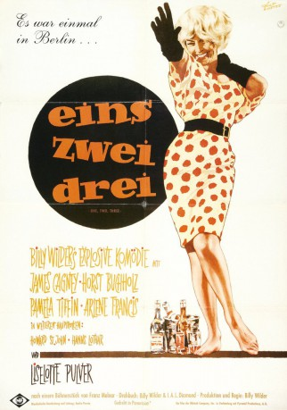

#6192 Eins, zwei, drei
Alternativ: One, Two, Three
Auszeichnungen: für 1 Oscars nominiert
 
 IMDB-Wertung: 8.0 / 10
IMDB-Wertung: 8.0 / 10  Metascore: 0
Metascore: 0 
Im noch ungeteilten Berlin der späten 50er Jahre muß C.R. MacNamara, ehrgeiziger Statthalter von Coca Cola in West-Berlin, voller Entsetzen zur Kenntnis nehmen, daß seine einzige Tochter von einem charmanten Kommunisten aus dem falschen Teil der Stadt geschwängert wurde und diesen auch noch zu heiraten beliebt. Keinen noch so miesen Griff in die Trickkiste scheuend macht sich MacNamara daran, den Bolschewisten auf kapitalistischen Kurs zu trimmen und die Familienehre zu retten...
Jahr: 1961
Dauer: 104 Minuten
FSK: 6
Land: USA Studio: United ArtistsTonspuren: DD2.0 - ,
Untertitel:
Auflösung: 720p (1280x536) Größe: 2693 MB
Genre: Komödie
Regisseur:  Billy Wilder
Billy Wilder
Drehbuch: J. Campbell Bruce
Soundtrack:
Darsteller:
- James Cagney als C.R. MacNamara
- Horst Buchholz als Otto Ludwig Piffl
- Pamela Tiffin als Scarlett Hazeltine
- Arlene Francis als Phyllis MacNamara
- Leon Askin als Peripetchikoff
- Peter Capell als Mishkin
- Liselotte Pulver als Fräulein Ingeborg
- John Banner als Krause / Haberdrasher
 Red Buttons als MP Sergeant , uncredited
Red Buttons als MP Sergeant , uncredited Sig Ruman als Count von Droste Schattenburg , uncredited
Sig Ruman als Count von Droste Schattenburg , uncredited- Howard St. John als Wendell P. Hazeltine
- Hanns Lothar als Schlemmer
- Ralf Wolter als Borodenko
- Karl Lieffen als Fritz
- Hubert von Meyerinck als Count von Droste Schattenburg
- Loïs Bolton als Melanie Hazeltine
- Til Kiwe als Reporter
- Henning Schlüter als Dr. Bauer
- Karl Ludwig Lindt als Zeidlitz
- Christine Allen als Cindy MacNamara , uncredited
- John Allen als Tommy MacNamara , uncredited
- Ivan Arnold als MP Corporal , uncredited
- Klaus Becker als East German Policeman , uncredited
- Max Buchsbaum als Tailor , uncredited
- Werner Buttler als East German Policeman , uncredited
- Paul Bös als Krause , uncredited
- Jacques Chevalier als Pierre - Navigator , uncredited
- Josef Coesfeld als Hairdresser , uncredited
- Ingrid DeToro als Stewardess , uncredited
- Siegfried Dornbusch als East German Policeman , uncredited
- Gernot Duda als Suitcase Salesman , uncredited
- Otto Friebel als Interrogator , uncredited
- Werner Hessenland als Shoeman , uncredited
- Friedrich Hollaender als Conductor at Grand Hotel , uncredited
- Rose Renée Roth als Berta , uncredited
- Helmut Schmid als East German Policeman , uncredited
- Abi von Hasse als Jeweler , uncredited
- Jaspar von Oertzen als Haberdasher , uncredited
Datei: X:\1961\Eins, zwei, drei (1961, FSK6, 1280x536).mkv seit 11.05.2017
Festplatte: HD 1900-1970
 Es gibt insgesamt 22 Filme in der Gruppe '1961'
Es gibt insgesamt 22 Filme in der Gruppe '1961'